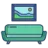

N
New Profile PicГенерация изображений
«New Profile Pic» создаёт портретные и аватарные изображения.
Раздел «Изображение → изображение»: варианты ИИ для этой задачи, описания возможностей и переходы к обзорам. Сравните несколько решений на одинаковом примере.
Создайте стилизованный вариант собственной фотографии для творческого проекта. Укажите технику и палитру, а также обязательные детали исходника; сравните положение персонажа, крупные предметы и композицию, чтобы стиль не заменил основной сюжет новой сценой.
Преобразуй мою фотографию прогулки в книжную акварельную иллюстрацию: мягкая охристая палитра, лёгкая бумажная фактура. Сохрани позу человека, форму зонта и расположение дорожки, без дополнительных персонажей.

«New Profile Pic» создаёт портретные и аватарные изображения.
Сравнивать «Passport Maker» с другими инструментами раздела «Генерация изображений» удобнее на одинаковом исходном материале.
Photo to Anime преобразует фотографии в изображения с аниме-оформлением на устройстве пользователя. В описании также предусмотрена генерация аниме по текстовому заданию. Инструмент объединяет обработку исходного снимка и словесное создание визуального варианта, чтобы работать с этим художественным направлением через разные виды ввода.
Pic Copilot создаёт визуальный контент для интернет-магазинов и продавцов маркетплейсов. Предусмотрены товарные изображения, рекламные баннеры и видео, а также показ одежды на ИИ-моделях. Продукт ориентирован на оформление электронной торговли, объединяя несколько видов демонстрационных материалов вместо одного отдельного редактора предметных фотографий.
Для «Pixelbin» сначала определите свою задачу и требуемый результат. Карточка относится к направлению «Автоматизация».
ReflectMe генерирует аватары с разными стилями и персонажными образами. Исходниками служат загруженные фотографии лица и верхней части тела пользователя. Продукт ориентирован на получение набора вариантов представления: фотографический материал преобразуется в выбранное визуальное направление, после чего узнаваемость и детали образа можно сравнить с оригинальными снимками.
«Remini» помогает исправлять и оформлять фотографии.
Сравнивать «RePic AI» с другими инструментами раздела «Редактировать изображение» удобнее на одинаковом исходном материале.

RoomGPT предлагает варианты оформления пространства на основе фотографии и выбранного стиля. Пользователь передаёт снимок комнаты, дома или участка и получает визуальный образ изменений. После генерации стоит сравнить проёмы и геометрию с оригиналом: идея оформления требует проверки деталей, а не заменяет точный проект помещения.
Toongineer Cartoonizer объединяет создание мультяшных аватаров с другими операциями над изображениями. В наборе предусмотрены масштабирование, подавление шума, восстановление и портретная ретушь, а также удаление окружения. Продукт охватывает как изменение стилистики снимка, так и его доработку, связывая художественную подачу с подготовкой визуального исходника.

Vectorizer.AI используют, чтобы получать изображения из словесного задания. Ещё одно направление работы: менять фотографии с учётом выбранного оформления.
Для «Visinova» сначала определите свою задачу и требуемый результат. Карточка относится к направлению «Генерация изображений».
«Watermark Remover AI» готовит визуальные материалы по заданию.
Сравнивать «AI Face Swapper» с другими инструментами раздела «Видео» удобнее на одинаковом исходном материале.
AutoDraw от Google помогает подбирать рисунки средствами машинного обучения. Инструмент относится к рисованию и предлагает визуальные варианты в ходе творческой работы. Пользователь получает помощь в оформлении изображения, когда собственный набросок или замысел нужно связать с предложенным системой рисунком.
«BabyVisageAI» готовит визуальные материалы по заданию.
«Creative Upscale by Openart» представлен в разделе «Редактировать изображение». При выборе проверьте нужную операцию и условия работы с результатом.
«Deep Image» увеличивает изображения для дальнейшей обработки. Дополнительно «Deep Image» помогает исправлять и оформлять фотографии.
«Getimg AI» готовит визуальные материалы по заданию.
«HitPaw Online Photo Enhancer» представлен в разделе «Изображения». При выборе проверьте нужную операцию и условия работы с результатом.
Для «IACrea» сначала определите свою задачу и требуемый результат. Карточка относится к направлению «Дизайн интерьера».

ImagineArt используют, чтобы собирать видеосцену по описанию или визуальному исходнику. Ещё одно направление работы: менять фотографии с учётом выбранного оформления.
«Inpainting Nvidia» помогает исправлять и оформлять фотографии.
Для «Little Artist» сначала определите свою задачу и требуемый результат. Карточка относится к направлению «Генерация изображений».
«Logoscapes» подготавливает варианты логотипов.
«Outfit Anyone AI» представлен в разделе «Мода, стиль и образы». При выборе проверьте нужную операцию и условия работы с результатом.
«Pet Booth» представлен в разделе «Генерация изображений». При выборе проверьте нужную операцию и условия работы с результатом.
«Pix2Pix» представлен в разделе «Генерация изображений». При выборе проверьте нужную операцию и условия работы с результатом.
Для «Pixar Persona» сначала определите свою задачу и требуемый результат. Карточка относится к направлению «Дизайн».
Для «Portrait Studio Pro» сначала определите свою задачу и требуемый результат. Карточка относится к направлению «Генерация изображений».
«RoomGenius» помогает представить оформление помещения.
Сравнивать «VREE Labs» с другими инструментами раздела «Разработка» удобнее на одинаковом исходном материале.
Сравнивать «Компьютерное зрение от Mail.ru» с другими инструментами раздела «Редактировать изображение» удобнее на одинаковом исходном материале.
Adstronaut помогает изменять изображения для маркетинга бренда. В работе используются ИИ-модели, варианты фона, ракурсы и позы. Инструмент предназначен для визуального представления продукции через фотографии моделей, позволяя исследовать разные способы оформления кадра и окружающей сцены при подготовке рекламного материала.
Сравнивать «aiphoto.studio» с другими инструментами раздела «Генерация изображений» удобнее на одинаковом исходном материале.
Для «Clio» сначала определите свою задачу и требуемый результат. Карточка относится к направлению «Генерация изображений».
Адрес DeepMode сейчас ведёт на ClipMode — сервис создания изображений и видео по референсу лица. Работа строится вокруг образа выбранного персонажа. Подготовьте исходник, которым вправе пользоваться, и после генерации сравните черты лица и узнаваемые детали в изображении или кадрах ролика.
«Eluna» отделяет объект от фона изображения. «Eluna» также готовит текстовый черновик по условиям задачи.
Fotor AI avatar generator превращает личные фотографии в аватары разных стилей. Продукт ориентирован на подготовку цифрового образа для социальных площадок, включая YouTube и Instagram. Исходный снимок становится основой варианта представления, где соответствие лица и деталей стоит сравнивать с фотографией перед выбором изображения для собственного профиля.
iFoto помогает обрабатывать фотографии для интернет-магазинов. Редактор заменяет манекен на изображении одежды цифровой моделью и создаёт варианты товарных снимков с другими фонами. Его инструменты относятся к визуальному представлению продукта: от образа модели до оформления окружающей сцены в электронной коммерции.
ImageCreator for PS добавляет к Photoshop средства ИИ для создания иллюстраций. Плагин предлагает редактирование и несколько управляющих моделей, включая ControlNet. Пользователь может готовить визуальный материал внутри редактора, сочетая генерацию с изменением изображения и выбранными инструментами управления результатом.
Сравнивать «Logo-mockup» с другими инструментами раздела «Дизайн» удобнее на одинаковом исходном материале.
Magic Avatars от Prisma Lab Inc. создаёт аватары по пользовательским фотографиям с участием ИИ. Фильтры и эффекты дополняют обработку снимка. Продукт ориентирован на визуальные материалы соцсетей, включая Instagram и TikTok, позволяя подготавливать оформленный вариант своего фотографического изображения для публикации.

Magnific AI используют для задачи: получать изображения из словесного задания. Ещё одно направление работы: менять фотографии с учётом выбранного оформления.
Magnific Image Upscaler увеличивает разрешение изображений и обрабатывает детали. На странице представлены режим Classic и творческая обработка Magnific с настройками Creativity и Resemblance. Прежний адрес Freepik Upscaler ведёт сюда.
PhotoEnhanceAI обрабатывает фотографии с помощью ИИ, включая масштабирование и восстановление лица. В наборе есть удаление окружения, объектов и царапин, а также работа с ночными снимками. Продукт связывает коррекцию качества с очисткой изображения, позволяя рассматривать повреждения исходника и лишние элементы кадра как разные задачи обработки.

Photoroom предназначен для доработки фотографий, в том числе товарного материала. При изменении окружения важно сохранить свойства самого объекта.
«RocketAI» готовит визуальные материалы по заданию. «RocketAI» также помогает исправлять и оформлять фотографии.
Страница 6 из 7